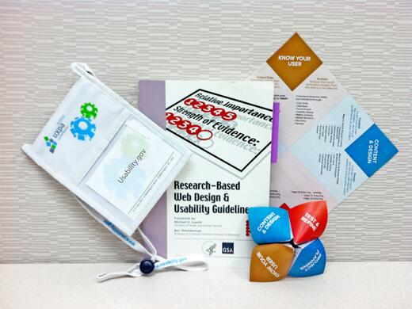

Many of you have asked if we are planning to update the Research-Based Web Design and Usability Guidelines. The answer is: Yes! We see the Guidelines as an important part of the reboot of our Usability.gov Program and now we know that many of you agree.
To kick this off, we recently presented an Idea Market at UXPA International  in Washington DC. During the event we learned how and why people use the Guidelines and gathered recommendations on how we might improve them moving forward.
in Washington DC. During the event we learned how and why people use the Guidelines and gathered recommendations on how we might improve them moving forward.

Goals of the Guidelines
First published in 2004, updated in 2006, and put into a database for easier access in 2012, there are 209 guidelines. The original focus was to address common questions that arise when creating or maintaining a website. Experts from across government, the private sector, and the academic community reviewed and contributed to them. Each guideline has a relative importance rating, strength of evidence rating, and lists supporting references.
At UXPA International, many of you told us how and why you use the Guidelines. We learned that in general, you use them:
- To review new content or sites
- As a point of reference with clients to discuss requests that they may have
- To help build the case for design decisions or recommendations you are making
- With students learning about website development
Improving and Building Upon the Guidelines
To revise the current guidelines, first we will need to review each entry and determine whether it need to be retained as is, or whether it needs to be updated or removed. Next, we will need to identify and validate new and relevant topics to cover. But then the question becomes:
How do we validate new guidelines or make updates to existing guidelines in a way that keeps them authoritative?
We posed this question in our presentation at UXPA international and got some helpful feedback and suggestions:
- Determine whether to focus on principles, implementation, or both: Both are important but principles live a little longer and are not as contextual.
- Remember that research still rules when creating a guideline but it is okay to start with evidence: Although it’s important to stay authoritative but it’s also important to stay up-to-date with advances in methodologies and technology. We need to have a process that allows us to be efficient. Many agreed that starting with evidence and adding research as it becomes available is okay.
- Update the content and add more guidelines: Participants suggested updating guidelines about typography, accessibility, and use of multimedia. They also suggested adding guidelines related to mobile, motion-based/ gestural interaction, eye tracking, tile design, and cross-channel optimization, among others.
- Be transparent about evaluating each guideline: There needs to be transparent criteria for evaluating each guideline and a way for users of the Guidelines to see where a guideline is at in the process (emerging/ proposed, evidence-based, research-based, peer-reviewed).
- Make sure that the strength of evidence and citations are still noted for each: Based on how they are used (noted above), strength of evidence and any references are still important to note for each guideline.
- Think about how to crowd source some of ideas and drafting of content: Leveraging a forum environment, is one way the community might submit ideas for topics to cover and others can provide feedback on those ideas and/ or vote up or vote down to help us prioritize them, make the process faster, and get a larger group of people engaged. If done, we’d need to think about how the content provided is then validated and approved.
- Consider additional formats: A colleague from NIH noted that he and his team have turned the Guidelines in an assessment kit. They turned each guideline into yes or no questions for easier evaluation.
This feedback is helping us work toward identifying our process for the 2013 edition of the Guidelines – but we would like to hear from you. Do you agree with the feedback and suggestions we have received so far? Have we missed anything? Please let us know how you would like to see this process take shape.